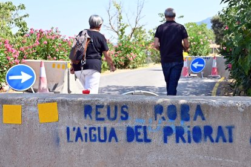

L’embassament de Siurana es va construir entre les dècades de 1960 i 1970 per regular les aigües del riu Siurana i garantir el subministrament al Priorat i al Baix Camp. Dirigit per l’enginyer A. Pol Giménez, el projecte formava part del pla hidràulic del règim franquista. Avui, el pantà combina la seva funció hidràulica amb un alt valor turístic i natural.

El pantà de Siurana està situat al terme de Cornudella de Montsant, al Priorat, a uns 3 km del nucli urbà. Rep les aigües del riu Siurana, nascut a les muntanyes de Prades, i d’altres torrents procedents de les serres del Montsant i la Gritilla, que n’alimenten el cabal de manera constant.

El pantà de Siurana té una capacitat de 12,43 hm³ i té una superfície de 69 hectàrees, amb una conca d’aportació de 60 km². La seva presa, de formigó per gravetat, fa 62,74 metres d’alçada i 274,4 de longitud. Gràcies al seu disseny robust, garanteix un subministrament estable d’aigua fins i tot en períodes de sequera al pantà de Riudecanyes.

El pantà de Siurana disposa d’infraestructures complementàries com accessos i edificis de control. Les seves aigües permeten activitats com el piragüisme i el caiac, mentre que els senders propers connecten amb el poble de Siurana i els tolls naturals del riu, creant un entorn d’alt valor paisatgístic i turístic.

Generalment, la presència de l'embassament ha generat més inconvenients que avantatges, sobretot ha perjudicat el transcurs del riu que abans corria l'aigua amb més força, però la presa ho frena tot.

L'embassament de Siurana porta aigua a l'embassament de Riudecanyes, aquest pertany a una altra comarca, per tant, també pertany a una altra conca. Això està generant una problemàtica molt gran, ja que els habitants de la conca del Priorat no tenen prou aigua.

El Baix Camp disposa d'aigua, per darrere també està Reus que aprofita un 34% de l'aigua de l'embassament de Riudecanyes. Tots dos tenen prou aigua per abastir les seves necessitats, a més, tenen el riu Ebre al seu abast. Això provoca un malestar a la zona de Siurana, perquè veu que la seva aigua l'estan aprofitant uns altres.

Des de l'anunciament de la contrucció del pantà sobre el 1930, la població estava totalment en contra de la seva execució. Però com era una època franquista, van haver de quedar-se a casa. Aquest pantà va emportar-se amb ell els millors cultius de la zona i quatre molins hidràulics.

Els últims anys, la gent ha sortit a manifestar-se pel mal ús i la mala gestió de l'aigua del Siurana, la qual els hi pertany. Hi ha hagut diverses revoltes, fins i tot, hi ha gent que ha sortit perjudicada en les protestes.

S'està buscant una solució, la qual podria ser portar aigua del riu Ebre, però si Reus, la Confederació Hidrogràfica de l'Ebre o l'Agència Catalana de l'Aigua fessin un ús i una gestió correcta de l'aigua, pot ser aquest problema s'alleugés. El Priorat, amb l'aigua de l'embassament de Siurana se'n sortiria.